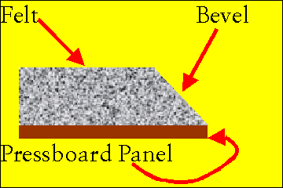
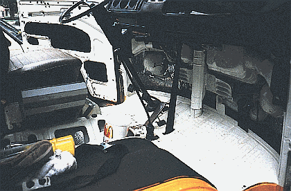
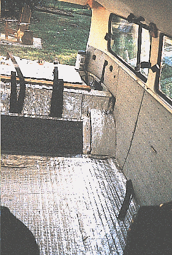
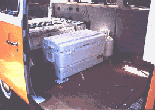
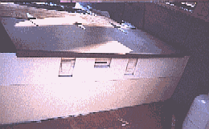
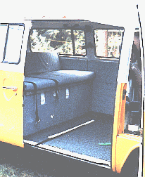

Interior Out, Noise Proofing 3

Interior Panels, Removal & Preparation
For those of you who are visual learners and have been pleased-as punch about the cornucopia of visual support, stay tuned, there's more to come. Just not in this "interior panels" section. I guess we did not take any photos of this phase/task. That's okay, You'll get it anyway! Here goes:
After removing the interior panels, we carefully removed all of the ducting/door handles, etc, and the clips from the periphery of the panels. Next we cut/ripped off all of the revolting, repugnant, offensive brown vinyl.
This left us with large sheets of neatly cut pressboard with strategically drilled holes, and a large pile of revolting, repugnant, offensive brown vinyl. We promptly threw the revolting, repugnant, offensive brown vinyl in the Dumpster, (which sounded remarkably like our bus when we closed the door).
We selected a durable coarseweave upholstery fabric, from Mill Outlet Cloth, in Greenville, NC, and bought (I think) 12 yards of the stuff, plus the material for the curtains, and material to cover the folding bed. Value-shoppers paradise. $100 for the bunch.
We also purchased 13 yards of 1/2" thick FELT carpet padding to use as padding behind the upholstery material (NOT the foam rubber stuff). This felt padding is important. It is adhered to the face of the panel behind the upholstery, where it deadens any vibration in the panel, and serves to absorb any resonant noise inside the cabin.

Interior Panels, Applying Felt Padding
Using the interior panels as a template, we cut the felt, and adhered it with spray adhesive to the panels. IMPORTANT: once you have fastened the felt soundly to the panels and allowed the panels to cure (a day), you must take a sharp pair of shears and bevel the edges of the felt everywhere the fabric will wrap around. Here's a close-up: (our visual learners are saying, "Thank God!"

If you leave the felt edges square your upholstered panels will look like Spanky & Alfalfa reupholstered them. Unless this is the look you desire, bevel the edges. Don't forget to go around the door latch holes, the window crank holes, and the vent holes.

Interior Panels, Cutting & Applying Material
Next, we cut the material. This takes practice, of which we initially had none, but now we have plenty. The material MUST be cut on the bias. I have no idea what that means, but the lady who sold us the material repeated those words like a mantra. "That material must be cut on the bias". So make sure you do.
We just made sure that the pattern on the material ran straight along the panels (no 2 degree decline on one panel, and a 4 degree incline on another). Cut the material to have approximately 10 cm extra around ALL edges. You can always cut more off, but you can't put it back.
Once you have the material cut, spray adhesive the back of the fabric, and the felt face of the panel. Leave the fabric lying on a smooth level surface. Line up the top edge of the panel with the pattern in the material, and lay the panel face down on the material. Step all over the panel to make sure the adhesive sticks.
Next, spray adhesive on the back side periphery of the panel about 2" from the edge, to the edge. Roll the excess material from the face of the panel, and press it firmly into the spray adhesive. Follow this immediately with a fusillade of 4mm staples from a staple gun to tack everything in place.
I used a manual staple gun for this. After stapling the edges of all 13 panels, my right arm looked like Popeye's arm, while my left still looked like my everyday left arm (a lot like Arnold Schwartzenegar's arm, but without all the muscles).
As you fasten the material around curves (like corners, the round curve at the bottom of the door, etc.) you will have to gather and cut material, or create relief cuts. However, this is really getting WAY beyond the scope of the Rust/Noise/Heat thing, so I'll leave you to figure that out with the help of your local upholstery shop.
Similar to the shoemaker, you will find the people at the upholstery shop euphorically friendly. I believe it is because they are surrounded by materials and adhesives that off-gas all manner of potent chemicals throughout the workday. If you value recognizing your own name, don't stay in there very long...
We replaced all the clips, and the little black rubber prophylactics that go into the door to hold the clips out of the weather. Once the interior walls of the bus were soundproofed, undercoated, insulated, and vapor barriered, we reinstalled the panels.

The Floor and Front End
Okay, we've got pictures of this stuff.

Boy! This photo has lots of stuff in it. First, notice the front panel (where the headlight buckets are) has been covered with Q-pads, Kool Patch, and shiny NASA insulation. This same treatment eventually was applied to the floorboards in this area, as well. The interior of the driver's door is black because its interior surface is covered first with Q-Pads, then two layers of Kool patch have been applied. Other than shooting Great Stuff expansion foam into the void ABOVE the door's window, and making a new vapor barrier for the door, that is all you can for the front door. Let me repeat that. DO NOT do anything else to the front doors. They are part of the vacuum-force ventilation system, and must "breathe". Plus, you have to be able to roll the window down, PLUS it gets really wet inside the door.
The Driver's seat has been diassembled and re-stuffed (MUCH more comfy!). There is a large McDonald's cup, belying my extreme thirst in the July heat. The passenger side seat arch is covered with Q-Pads and Kool Patch. You see my boom-box leaned up between the seats. Finally, there are two cans (lower left) of foam expansion sealant ready to fill the voids somewhere, (probably the void over the top of the windows in the door; this required a long hose, and some patience). There is a leather glove and rags next to the cans of foam. You will need both.

Here we see that the side panels are re-installed, the Q-Pads and Kool Patch are on the floor/inclined area, and a single layer of NASA insulation covers the floor. Two layers will cover the central portion of the inclined area (between wheel arches) as this is a VERY warm and resonant area of the body. Both layers were adhered with the aluminum facing out. We used spray adhesive on all of the inclined areas to hold the insulation in place, then used duct tape to seal the edges, and to give a tidy finish. We used cardboard on the floor while installing so we didn't tear the aluminum facing on the NASA insulation.
|
 By-in-large, that is the finished product, (prior to carpet/padding, etc). The floor is covered with Q-Pads, Kool Patch and NASA insulation, the panels are reinstalled. You can make of one of the luggage anchors in the middle of the bulkhead (right side of photo). We installed seven of these in discrete, yet useful locations. You can also make out the heat recirculation duct sticking up behind the spare tire well. More on that in the "heat" section. |
 94-Quart cooler, propane tank and Aux. Battery positions. Lots of space saved this way. |
|
 Next, the retainer panel in place for the above items, and hinged counter-top/bed base installed |
|
|
 Finished Product. Double bed futon folded up behind our new rear "seat". Cooler drains through a hose through the floor. |
One little detail has to fit somewhere, so I'll mention it here. We sprayed all of the seams (including the exterior body seams) with a product called "Rust Preventative" by 3M. It goes on as thin fluid (like WD-40) then dries to a waxy, oily, pasty goo. It is difficult to wipe off, and dispatches water with tremendous vigor. All of the door surrounds, the sliding door rails, and any other nooks and crannies got a thorough dousing. Cheap. About $5.00 for a can. Took two cans, although I used it as deodorant twice.
Are you ready to learn about the fantastic heater system, right? Click here
I really don't care if my heater works... Click here

Wait, I think I missed something. Take me back to Interior Section #2
Wait, I think I missed something. Take me back to Interior Section #1
Engine Out, Then Back In | Heater Design, Install | Home |
Could our business help yours? Find out how, here: http://www.bulley-hewlett.com/
Write us at: mailto:gmbulley@bulley-hewlett.com